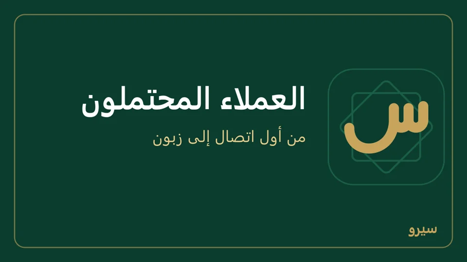
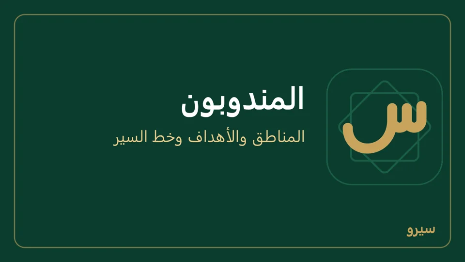
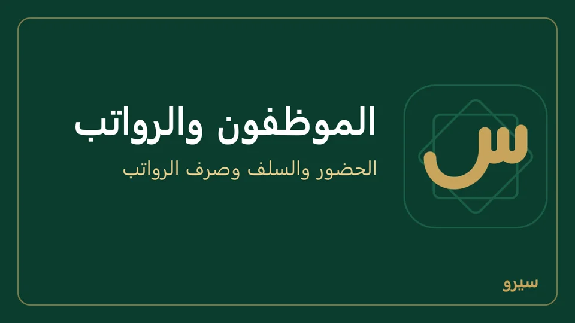
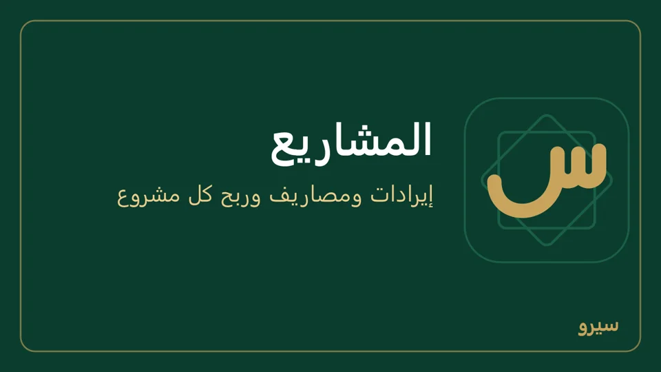
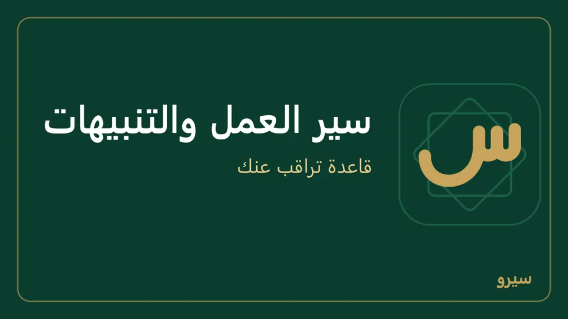
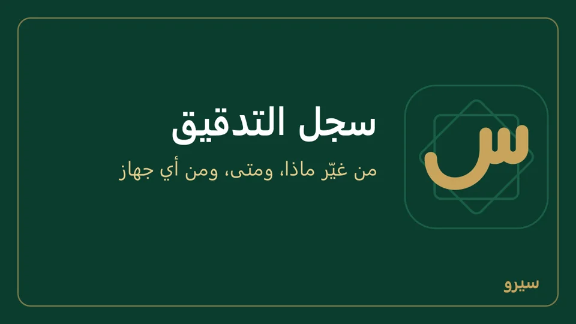

الإدارة والفريق
ما يحتاجه صاحب العمل لإدارة فريقه، على الكمبيوتر وعلى الجوال بالأسماء نفسها. على الجوال كلها في مجموعة الإدارة بالشاشة الرئيسية (وسجل التدقيق في بيانات المحل)، ويظهر منها ما فعّلته في الأقسام وما يسمح به دورك.
العملاء المحتملون
- افتح العملاء المحتملون، اكتب الاسم والهاتف والمصدر والقيمة المتوقعة وموعد المتابعة، واضغط إضافة (على الجوال: عميل محتمل جديد).
- اضغطه وسجّل كل اتصال أو زيارة في النشاطات مع المتابعة التالية. ما حلّ موعده يظهر أعلى الشاشة في متابعات مستحقة.
- غيّر المرحلة كلما تقدّم، ومع خسرنا اختر سبب الخسارة.
- حين يصير جاهزاً للفوترة اضغط تحويل: يصير زبوناً (أو اختره في تحويل إلى زبون (أو اربط بزبون موجود)) ويبقى تاريخه معه، وينتقل إلى ربحنا فلا تبقى له متابعة مستحقة. إن كان عندك زبون بالاسم نفسه لا يُنشأ ثانٍ: اربطه به من القائمة، أو أضف إلى اسم العميل المحتمل ما يميّزه.

المندوبون
- في المندوبون أضف المندوب وعمولته ومنطقته، وفي إسناد عميل اختر لكل زبون مندوبه أو منطقته.
- اضغط المندوب: مبيعات الشهر والتحصيلات والزيارات والعمولة، وحفظ الهدف لهدف الشهر.
- يدخل على التابلت باسم يربطه بمستخدمه، وجهّز السيارة والعهدة تفتح له مستودعاً في السيارة وحساب عهدة لنقده (من كمبيوتر الشركة إن كان الجهاز تابعاً).
- في خط السير اضغط زبوناً لتسجيل زيارة اليوم: طلب، تحصيل بمبلغه، بلا بيع، أو مغلق.
- حين يعود: استلام الغلّة ينقل نقده إلى الصندوق، ومرتجع السيارة تعدّ ما بقي فيها فيعود إلى المستودع ويُسجَّل الفرق جرداً. ولكلٍّ منهما التاريخ (فارغاً يعني اليوم).

على الجوال: المندوبون من مجموعة الإدارة بالخطوات نفسها، على جوال المكتب لا على جوال المندوب. وما يفعله المندوب على جواله: على جوال المندوب.
على جوال المندوب
على الجوال فقط. المندوب يدخل باسمه على جوال مربوط بكمبيوتر الشركة، بعد أن يجهّز له المكتب جهّز السيارة والعهدة ويدخل على التابلت باسم (المندوبون).
- أعلى الشاشة الرئيسية معك نقداً (عهدة): ما قبضه ولم يسلّمه بعد. كل قبض من زبون يدخل عهدته ويُسجَّل زيارة تحصيل.
- يبيع من بضاعة سيارته: الأصناف تعرض الكمية في سيارتك، وفي الفاتورة يظهر بجانب كل صنف المتاح منه، ولا تُحفظ فاتورة بأكثر مما في السيارة، والصنف بكل وحداته معاً: كرتونة (360) و100 بيضة تحتاجان 460 بيضة. ولا يضيف صنفاً جديداً ولا عملاً حسب الطلب من الفاتورة.
- الزبائن تبدأ بزبائنه (حسب إسناده أو منطقته). من صفحة الزبون: فاتورة وقبض ودين عليه وكشف حساب.
- زيارة بلا بيع ولا قبض: في صفحة الزبون، تحت زيارة اليوم بلا بيع ولا قبض، اكتب ملاحظة إن شئت واضغط أخذ طلبية أو لم يشترِ أو المحل مغلق. تظهر زياراته في صفحته عند المكتب.
- لا يرى على جواله المرتجع والإشعارات والجرد وتحويل المخزون وإعادة الطلب والعروض وقوائم الأسعار والتقارير والمحاسبة وبيانات المحل: المرتجع والجرد يتمّان عند المكتب بـمرتجع السيارة واستلام الغلّة.
- يبيع ويقبض بلا إنترنت، ويتزامن حين يعود إلى شبكة الشركة.
الموظفون والرواتب
- في الموظفون والرواتب أضف الموظف براتبه الشهري. موظفان بالاسم نفسه يختلطان في الرواتب والسلف، فيطلب البرنامج ما يميّز الثاني («سامر - بائع»).
- الحضور اليومي: اختر لكل موظف حاضر أو غائب أو إجازة واضغط حفظ الحضور.
- آخر الشهر اكتب الإضافات والحسميات واضغط صرف رواتب. لا تُصرف رواتب شهر لم يأتِ (لما يُدفع مقدّماً سجّل سلفة)، ولا يُصرف لموظف تاريخ بدئه بعد الشهر. يُحسم كل يوم غياب بنسبة الراتب/30 (ولا يُحسم للغياب أكثر من راتب الشهر)، وتُصرف كلها من الصندوق بقيد واحد. إن كانت حسميات موظف أكبر مما يستحقه هذا الشهر لا تُصرف الرواتب، ويقول البرنامج كم يستحق: خفّضها إليه واحسم الباقي في الشهر القادم.

- السلفة: تُعطى بـسند صرف ← سلفة لموظف. عند صرف الرواتب يظهر عمود سلفة بما عليه، فيُحسم من راتبه؛ صغّر الرقم لتقسيطها على أشهر، وما بقي يُحسم في الشهر التالي. لا يُحسم أكثر من راتبه، وما حُسم يدخل في حسميات.
- تعديل موظف أو إزالته: تحت الموظفون اضغط تعديل بجانب اسمه: الاسم والوظيفة والهاتف والراتب الشهري، ثم حفظ. الراتب الجديد يُصرف من الشهر القادم، والرواتب المصروفة تبقى كما صُرفت. إزالة تحذف موظفاً أُضيف بالخطأ؛ ومن له حضور أو رواتب أو سلف (ترك العمل) يُؤرشف: يبقى في السجلات والكشوف ولا تُصرف له رواتب، ويعود بـاستعادة من المؤرشفون. لا يُزال من عليه سلفة باقية: تُحسم من راتبه أو تُسترد بسند قبض أولاً.
- رواتب خاطئة؟ تحت كشف الشهر اكتب سبب الإلغاء واضغط إلغاء رواتب: يُعكس قيدها فيعود المبلغ إلى الصندوق وتعود السلف المحسومة على أصحابها، ثم اصرف الشهر من جديد. القيدان يبقيان ظاهرين في الدفاتر، والسبب في سجل التدقيق. إن كان الشهر في فترة مقفلة يُؤرَّخ العكس بتاريخ اليوم.
رواتب الشهر تُصرف مرة واحدة؛ الكشف يبقى ظاهراً لذلك الشهر. وإن صُرفت على جهازين قبل أن يتزامنا يبقى صرف واحد (المزامنة).
على الجوال: الموظفون والرواتب من مجموعة الإدارة، بالأسماء نفسها: اضغط الموظف لتعديله أو إزالة، والمؤرشف لـاستعادة، والسلفة في خانة سلفة تُحسم تحت كل موظف، وسبب الإلغاء وإلغاء رواتب تحت كشف الشهر.
المشاريع
- مشروع جديد باسمه وعميله وموازنته، ثم اضغطه لترى الإيرادات والمصاريف وتكلفة الساعات والربح وكم صُرف من الموازنة.
- سجل الوقت: ساعات كل موظف وتكلفة الساعة. الإيرادات من فواتير البيع المربوطة بالمشروع.
- إغلاق المشروع حين ينتهي: لا تُسجَّل عليه ساعات بعده. إعادة فتح المشروع لتصحيح، ويُكتب الإغلاق وإعادة الفتح في سجل التدقيق.

على الجوال: المشاريع من مجموعة الإدارة، بالأسماء نفسها.
سير العمل والتنبيهات
قاعدة بسيطة «فاتورة فوق مبلغ تحتاج موافقة» أسهل من الموافقات.
- في سير العمل اختر عندما (فاتورة جديدة، رواتب، إغلاق وردية…)، وأضف شروطاً إن شئت (الإجمالي أكبر من…).
- اختر الإجراء: يحتاج موافقة، تنبيه داخلي لدور، أو منع العملية برسالة. شروط النوع والطرف والمنشئ تُختار من قائمة بالأسماء. كل قاعدة لها تعديل وحذف، و«عميل أو مورد جديد» يعمل لكل زبون أو مورد يُضاف ولكل عميل محتمل يصير زبوناً.
- التنبيهات تصل إلى التنبيهات؛ اضغط افتح لتفتح الفاتورة أو الوردية التي يشير إليها، أو تم حين تنتهي منه، أو اعتبرها كلها مقروءة. القراءة لك وحدك: يبقى التنبيه عند غيرك حتى يقرأه.

استدعاء Webhook (نظام خارجي) يُضاف من الكمبيوتر فقط.
على الجوال: سير العمل من مجموعة الإدارة (للمالك): سير عمل جديد بالخيارات نفسها، ثم حفظ سير العمل، ومفتاح بجانب كل قاعدة يوقفها أو يشغّلها. والتنبيهات في المجموعة نفسها: اضغط التنبيه لتفتح ما يشير إليه.
سجل التدقيق
الإعدادات ← التدقيق على الكمبيوتر، أو بيانات المحل ← سجل التدقيق على الجوال: كل تغيير على أي سجل مع الجهاز الذي أجراه، وكل دخول وقيد مع من قام به. ابحث باسم أو رقم، واختر المستخدم لترى ما فعله شخص واحد، وضيّق بالتاريخ (أيام المحل نفسها: ما جرى بعد منتصف الليل يظهر في يومه). يُعرض آخر 300 سطر، وأقدم في الأسفل يفتح ما قبلها. كل سطر يجمع من قام بالعملية والجهاز الذي أجراها، وفي التفاصيل الاسم والرقم والمبلغ والسبب حين يُكتب سبب. اضغط سطر قيد أو مستند لتفتحه، على الكمبيوتر والجوال. لا يُحذف منه شيء.

- كل عملية تحمل اسم دخول من قام بها، على الكمبيوتر والجوال، فلا يختلط شخصان لهما الاسم نفسه.
- ويُكتب فيه من أضاف مستخدماً أو أوقفه أو فعّله أو غيّر كلمة مروره، ومن أنشأ مفتاح API أو Webhook أو ألغاه (بلا المفتاح نفسه)، ومن غيّر الضرائب أو بيانات الفاتورة القانونية أو الولاء أو الحقول الحساسة أو أدوار التحقق بخطوتين، ومن غيّر سعر صنف أو شروط البيع لزبون (من الشاشة أو من Excel)، ومن ألغى مصروف شاحنة وسببه، ومن فعّل قسماً أو أوقفه أو عدّل قالب الطباعة أو أضاف حقلاً مخصصاً أو طريقة دفع أو أوقفهما، مع القيمة قبل التغيير وبعده.
- في التقارير اختر سجل التدقيق: المستخدم والعملية بالكلمات، وعلى ما جرت (قيد، مستند، حساب…)، والمرجع برقمه أو اسمه (#182، INV-19، 59 إيجار المحل)، والسبب.